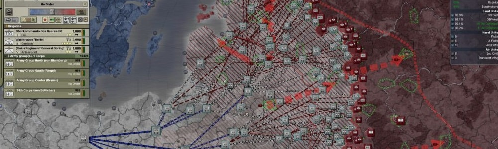

New Website
published 12th May 2017
I've updated driftbreak.com
Read on for more details, and expect more updates to come!
Hearts of Iron
published Nov 19th 2016
20th May, 1941. Soviet infantry and armour have rolled into Finland throughout March and April, seizing the capital Helsinki, and advancing on the coast. They reach it, splitting the country in two – north and south. But the air is thick with aircraft and parachutes. Landing craft hit the beaches. Reinforcements have arrived.
Elite German paratroopers land in the north, and marines in the south. Surrounding the overextended Soviet troops, they link up with the remaining Finnish forces and begin pushing back. Most of the Soviets surrender, the rest scramble backwards to form a defensive line. German and Finnish forces recapture Helsinki to cheering crowds. They push onwards to the front. The war rolls on. This is just a sideshow.